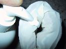
Towel And Glove 2
Doctor
Muhammad Muhammad El Hennawy
ObGyn Consultant
01222503011
Egypt Dumyat Ras El Bar
Artificial Vagina
An artificial vagina is a device designed to imitate the female sex organ.
To achieve this, it will generally be made of a soft material, lubricated, and sometimes heated.
It may be designed for medical research purposes, animal breeding, or as a sex toy for erotic stimulation.
How to make a fake vagina out of household items
It gives a realistic sensation of the slipperiness, tightness and warmth
It is designed to simulate the sensation of sexual intercourse on the erect penis and to induce orgasm and ejaculation.
The towel and glove
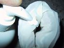
Towel And Glove 2
The Stock And The Glove
The Towel , 2 gloves and the bottle
The Foam Rubber and Condom
|
Materials : -Lays/Pringles Can -Foam rubber -Condom -1 1/4'' o-ring -Scissors -Marker
|
 |
|
Empty the chips out of the can. You can use whatever brand and flavor you prefer, but we like the one shown here for the containerís ergonomic shape and durable, colorful plastic. Lay out the foam and trim to fit the length of the container if necessary. The length of the foam can be up to an inch longer than the length of the can.
|
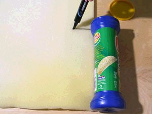 |
|
the condom and drop the O-ring inside. If you use a lubricated condom, turn it inside out first, so the lube is on the inner surface
|
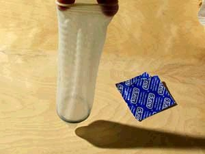 |
|
Lay the condom along the foam with the open end slightly above the edge, and mark across where the O-ring lays in the condom. Cut the foam into two pieces along this line.
|
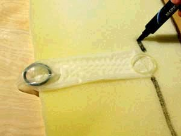 |
|
Roll up the smaller piece of foam and push it into the bottom of the can. Lay the condom against the shorter edge of the other piece of foam so that the tip and the O-ring are hanging over one end and the open top of the condom is hanging over the other. Roll up the foam with the condom inside. The O-ring should be flat against one end of the foam roll, and the top of the condom should be sticking out of the center of the other end. (/pre>
|
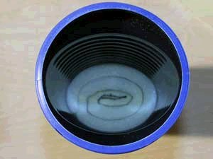 |
|
With the scissors, make a nick in the tip of the condom, just enough so some air can get through. Insert the foam roll into the chip container, making sure the open end of the condom stays above the top of the foam. Leave about 1/2" ro an inch of foam above the rim of the can.
|
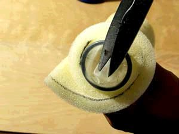 |
|
a nail or screwdriver to poke a small hole on the side of the can near the bottom.
|
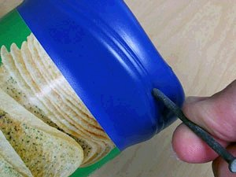 |
|
Optional: If desired, use a pink or red marker to draw a vagina or lips on the foam around the center hole before covering the foam with the condom.
|
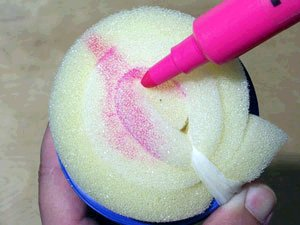 |
|
Carefully stretch the condom around the rim of the can and over the lip so it covers the foam. The lip of the can will hold the condom in place.
|
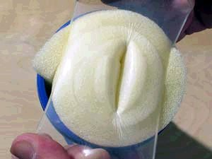 |
|
To use your homemade flashlight toy, squirt some water-based, non-greasy lube into the condom and insert your penis. Cover the hole in the can with the tip of your finger to control the amount of suction you get. Closing the hole will increase the suction, so leave it open as you stroke in, and cover it on the out stroke.
|
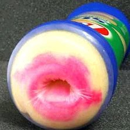 |
The Cup and Sponges
The plastic bottle and sponges technique
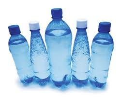
There are various different ways of doing this, but the principle is to get the right tightness + softness combination of the sponges
The zip-bag and towel
This is very similar to the towel and glove method. Instead of using the glove inside the towel do the following:
The toilet roll and condom
This is another of the simplest ways to make a fake pussy out of household items. Essentially all you need is a toilet roll inner cardboard tube, a condom and whatever lubricant you feel like using. Then follow these steps:
Improved version:
If you want you can do the same with a whole toilet roll. But first remove the inside cardboard tube. The condom will still stretch far enough to fix onto the outside of the roll
. 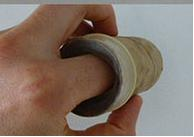
This is much softer and you can squeeze the roll around your penis. The only problem is that you kind of waste a whole toilet roll. Unless you live alone and can face using it after you finish. We wouldnít though.The insulation piping suction method
This version is very similar the the toilet roll method, except better
Because one end is sealed off it will have a suction effect. Be careful though is the suction is too much ñ you donít want to damage yourself. You can always poke air holes in the sealed end if the suction is too strong.
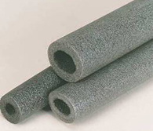
Fix It
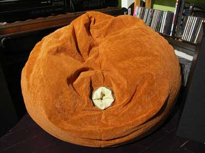
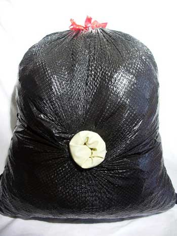
Sponge Bottle, No Pants
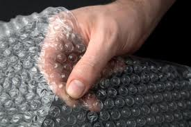
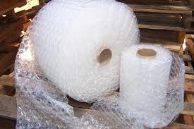
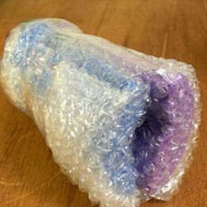
.
Materials:
Empty(clean and dry) soda bottle,
scissors,
bubble wrap,
two sponges (with no rough sides),
masking tape..
1. Cut off the top of your soda bottle. Make sure you cut evenly, so that there
are no jagged sides.
2. Take two sponges and place them side-by-side on a rectangular sheet of
bubble wrap.
3. Fold the bubble wrap in, wrapping each of the sponges individually while
still leaving some space in the middle.
Making sure there is some bubble wrap slack that can stick
out of the bottle later.
4. Squeeze the sponges into the soda bottle.
Make sure that they are as symmetrically inserted as possible.
5. Tape the excess bubble wrap "slack" to the sides of the soda bottle,
securing that both the opening of the soda bottle isn't sharp and that the sponges will remain inside.
"Realistic" Homemade Sleeve (Complicated)
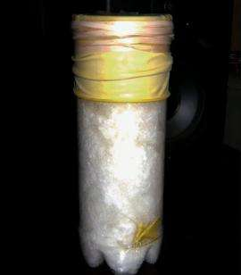
Materials:
A plastic Wilson Tennis Ball container ,
a pair of thick dishwashing gloves,
the kind with the longer sleeve ,
a box of Magnum XL lubricated condoms (non-spermicidal),
a bunch of thick rubber bands,
a basic absorbant diaper (of any kind, we'll be using the absorption beads on the inside, so don't worry what kind you get) ,
a pair of scissors,
a glass of water,
a sharpie,
KY Jelly (not for use, but actually goes
into the making).
1. Empty the contents out of the tennis ball container and take off the outer
wrapping.
Then, with your scissors, make a small hole on the bottom of one of the corners
of the container for ventilation.
If you skip this step, there will be nowhere for the air to go when something
goes inside it.
2. Open one of the condoms and completely unroll it. Squirt some KY Jelly inside
to the bottom, use a decent a mount, but not a ton.
Open and unroll another condom, and with the Sharpie, push the second condom
down inside the first condom, "double bagging it" in a sense.
Make sure the condom goes all the way down. Repeat this as many times as you
like. The more you use, the tighter it will be. You want to use at least Five.
The lubrication between each condom helps replicate the feeling of moving soft
tissues.
When you're done with this part, it will look something like this:
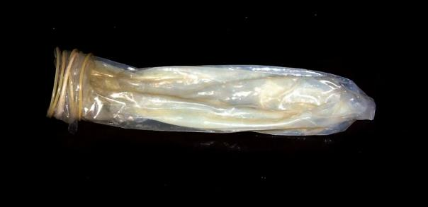
3. Take the diaper and completely open it flat. Get your scissors and cut along
the line where the lining for the diaper is.
The top and bottom should easily separate. Try your best to keep the absorbant
material together, and not fall apart.
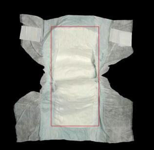
The absorbant material is to be put aside for now.
It will be used as liner inside the container.
Leave the material on one side of the diaper outer layers to keep it all
together and not make a mess.
4. Take your scissors and cut the tips off all the fingers of both dishwashing
gloves.
Work one glove inside the other. It doesn't have to be "neat", in fact you want
it a little bit in disorder.
Next, carefully take the absorbant material and loosely wrap it around the
gloves, but take a little piece of the material off and drop it into the bottom
of the container. Make sure you leave about 2-3 inches of glove tops unwrapped
to fold over.
Take the newly wrapped gloves and slide it down inside the container, leaving a
decent amount to wrap over the sides of the container to make "lips".
Next, take your glass of water and start pouring it down inside along the sides
onto the absorbent material.
Don't worry about leaking, the material is super absorbent and actually turns into gel crystals.
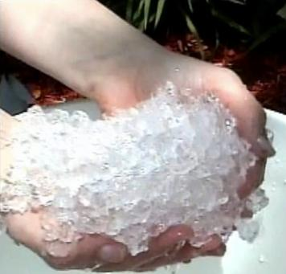
Fully saturate all absorbent material until you see all the material getting
fully drenched.
Be careful, it expands and it will replicate something solid to work with and
will add weight to the toy.
Next, fold over the sleeves of the glove over the rim of the container.
Stretch two ends oblong to replicate "lips" and secure a thick rubber band. I
would use two or three.
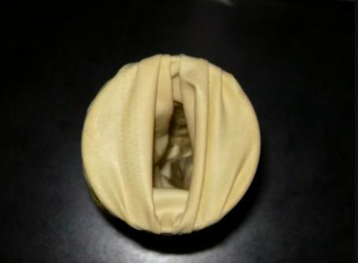
5. Take the condoms you put together, and with the Sharpie, work them down into
the hole of the container with a bit sticking out the top to allow for folding
over.
6. Lastly, simply take the tops off the condoms and fold them over the rim of
the container. Try to get them a good half inch past the rim for security.
Be careful of your nails (not to rip them). Put them all on at once, this helps
avoid any ripping.
When secured over the hrim, use a couple of thick rubber band sto keep them nice
and tight around the edge.
And that's it!!!
When you're done, it should look like the picture above (on this item).
Use whatever lube you think is best and have fun!
Glove Inflation
The Pillow and Glove